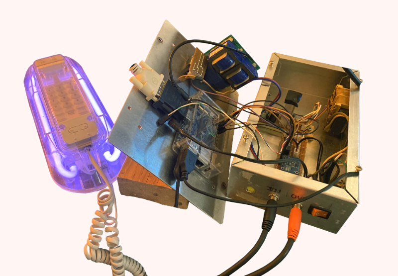

2022 | Interactive installation
Description:
Why Do We Live Here? or My Life Through a Chip Bag
This installation piece was on-site at Taylor Town. A digital picture frame and a landline phone were mounted side-by-side on a piece of 1/2" drywall. The drywall and accompanying stand were assembled according to conventional wood frame home construction practices.
The picture frame cycled through approximately 300 images of then-current real-estate photos from the Albuquerque and Rio Rancho areas. The images were chosen for their emotional impact.
When the landline phone handset was lifted, a random recording (from a pool of about 30) played automatically. These recordings were recorded by myself or submitted by friends, and broadly responded to the prompt "something an angry, stifled suburban parent would say." Some of these recordings were only screams. Others emulated a voicemail.
Featuring the voices of:
Eli, Tahj, Gus, Joe, and Ray
Notes and extras:
The phone handset playback device was the most significant part of this project. This part is controlled by a small single-board computer, which executes a phython script. It watches the current draw (in milliamps) on the phone's POTS line ... when it increases, it knows the handset's been lifeted, triggering the audio playback. Audio is amplified using an external audio receiver/amp.
